Início
Sobre
Feedback
Jogos
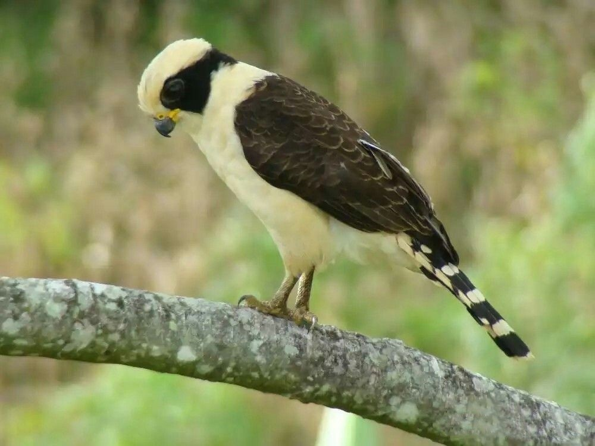
Acauã
Herpetotheres cachinnans
Sobre
Arara-canindé
Ara ararauna
Sobre
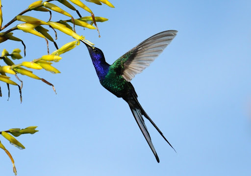
Beija-flor-tesoura
Eupetomena macroura
Sobre
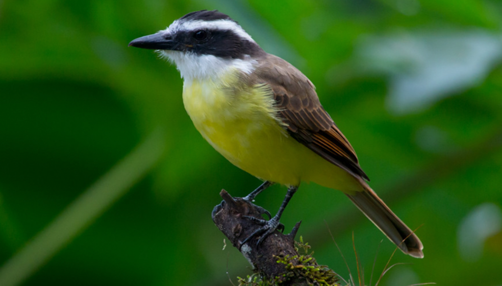
Bem-te-vi
Pitangus sulphuratus
Sobre
Biguá
Phalacrocorax brasilianus Gmelin
Sobre
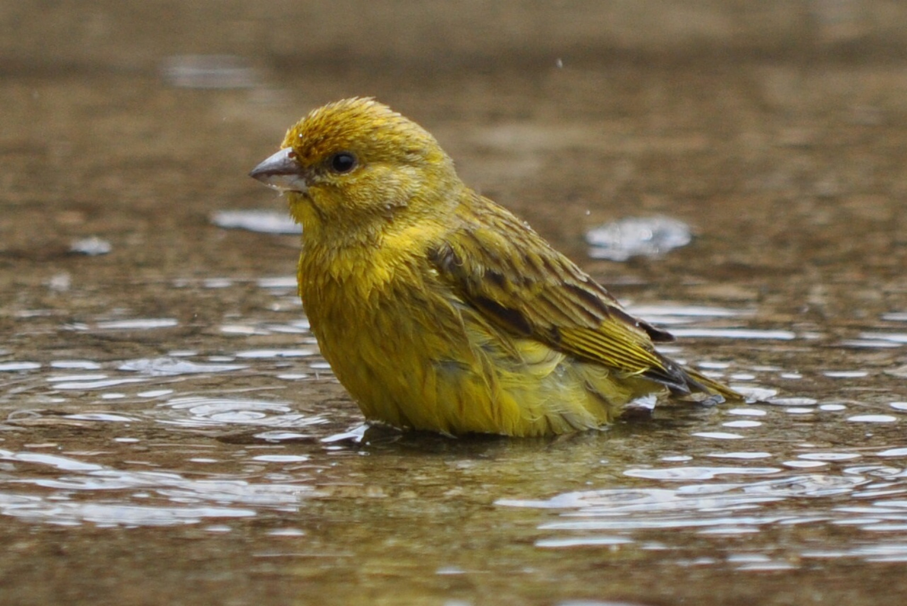
Canário-da-terra
Sicalis flaveola Linnaeus
Sobre
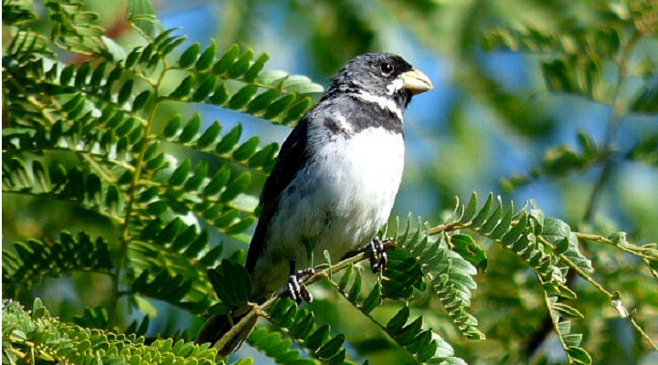
Coleirinho
Sporophila caerulescens Linnaeus
Sobre
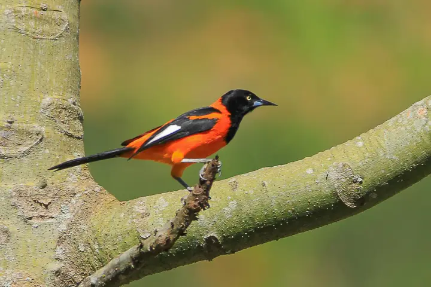
Corrupião
Sporophila caerulescens Linnaeus
Sobre
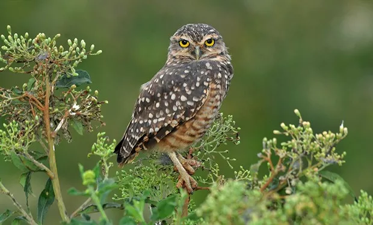
Coruja-buraqueira
Athene cunicularia Molina
Sobre
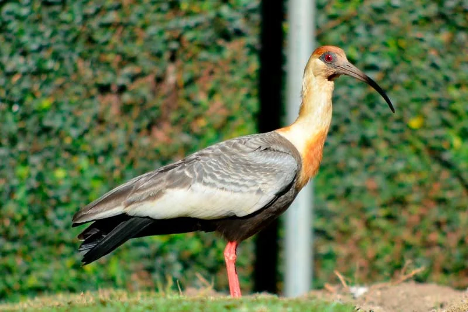
Curicaca
Theristicus caudatus Boddaert
Sobre
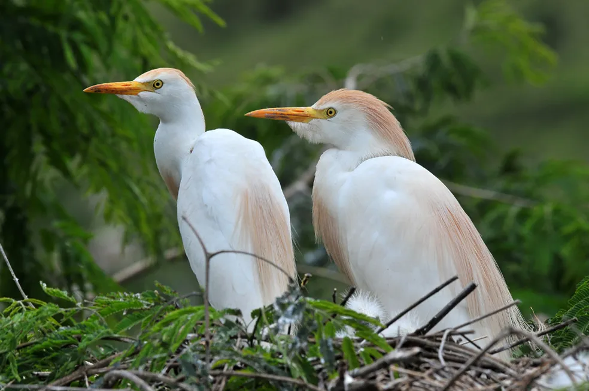
Garça-boiadeira
Bubulcus ibis Linnaeus
Sobre
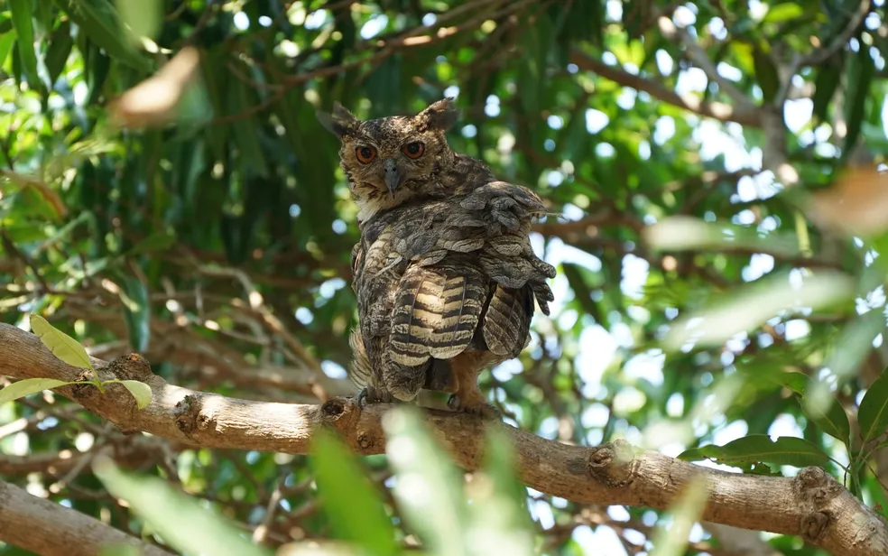
Jacurutu
Bubo virginianus Gmelin
Sobre
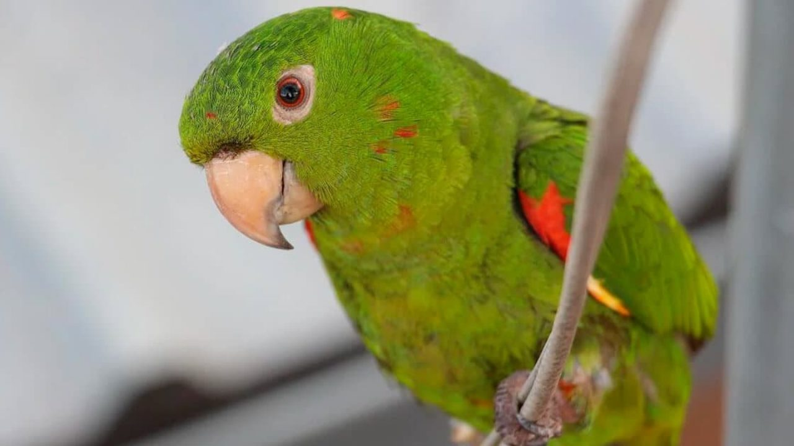
Maritaca
Psittacara leucophthalmus Statius Muller
Sobre
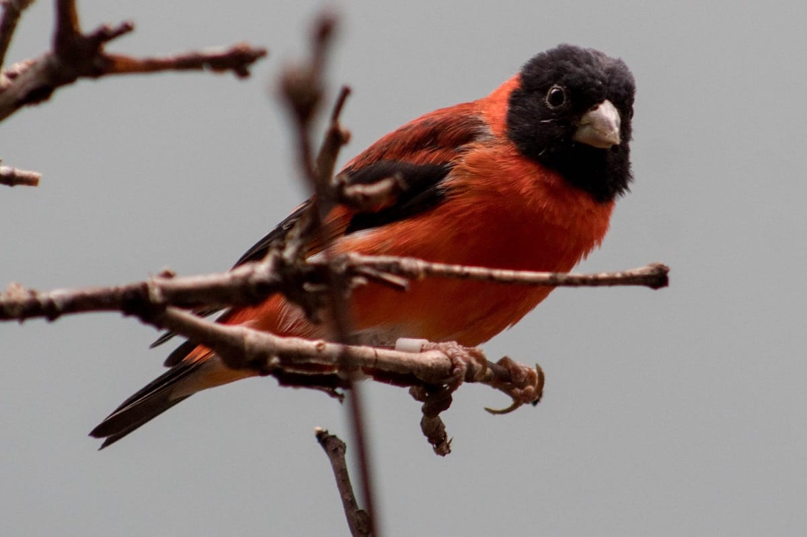
Pintassilgo-da-Venezuela
Spinus cucullatus Swainson
Sobre
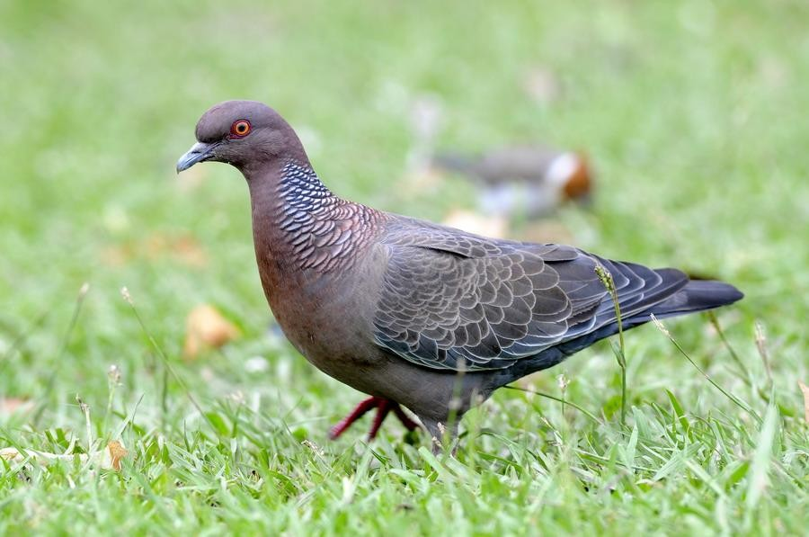
Pombão
Patagioenas picazuro Temminck
Sobre
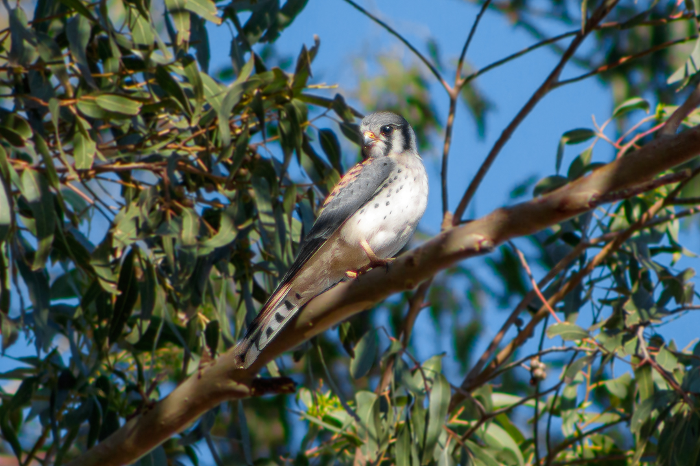
Quiriquiri
Falco sparverius Linnaeus
Sobre
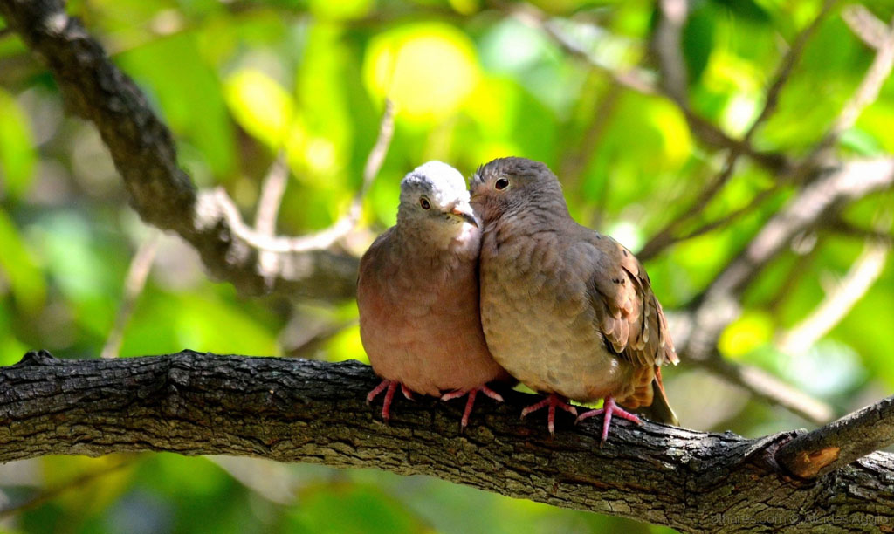
Rolinha
Columbina talpacoti Temminck
Sobre
Sanhaço-cinzento
Thraupis sayaca Linnaeus
Sobre
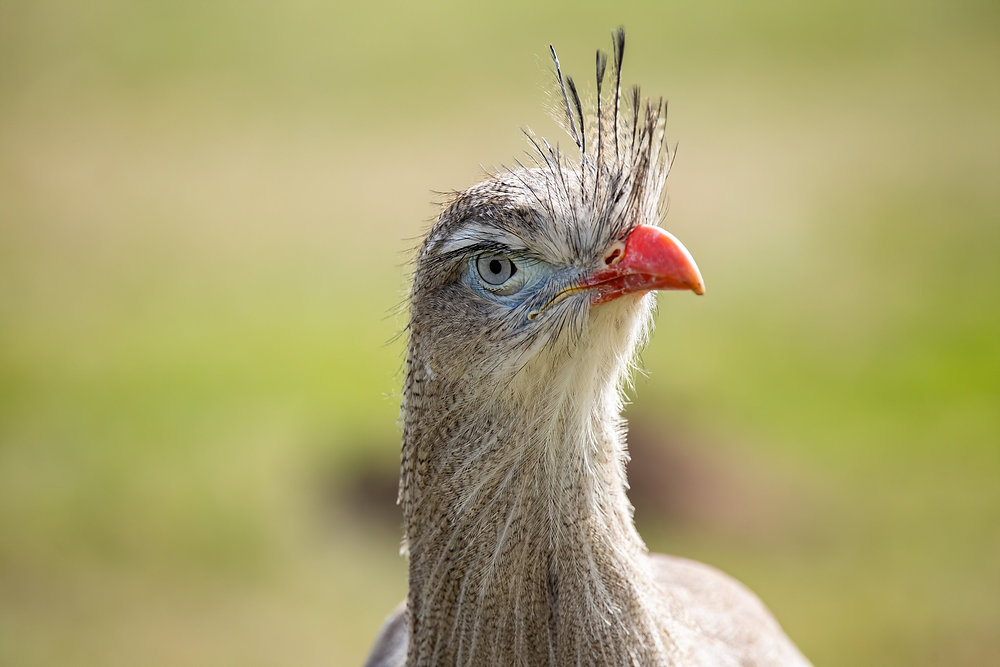
Seriema
Cariama cristata Linnaeus
Sobre
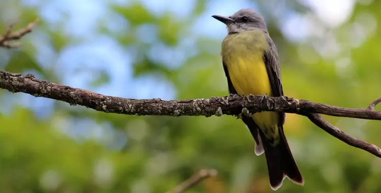
Suriri
Tyrannus melancholicus Vieillot
Sobre
Tucano-açu
Ramphastos toco Statius Muller
Sobre
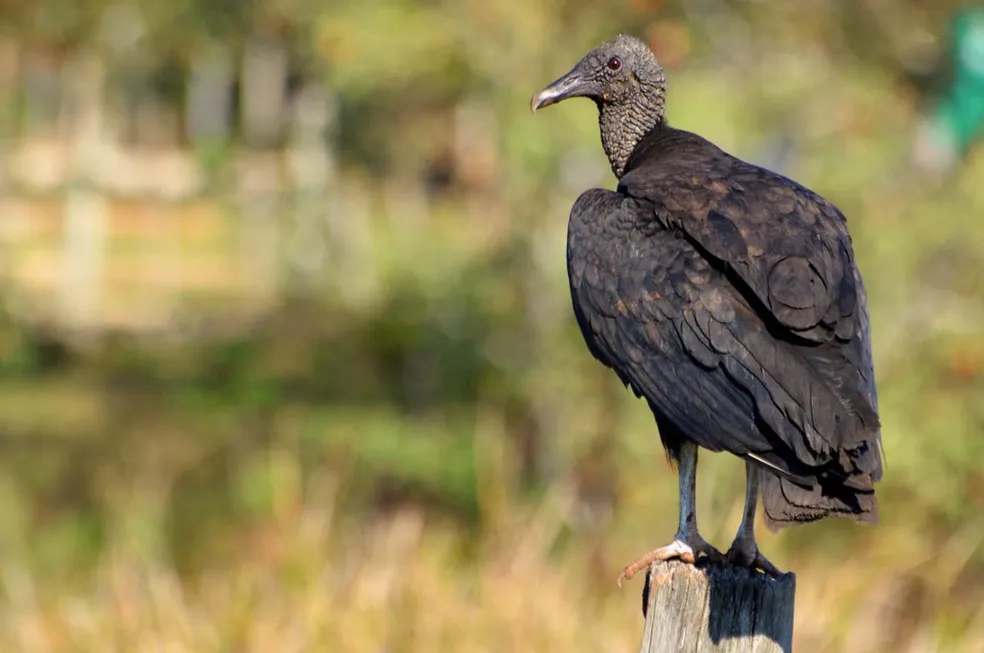
Urubu-preto
Coragyps atratus Bechstein
Sobre
Informações sobre Aves
Características Principais
Penas:
Exclusivas das aves, servem para voar, isolamento térmico, camuflagem e exibição durante o acasalamento.
Bicos:
Adaptados à dieta, que pode variar entre herbívora, carnívora, onívora ou nectarívora.
Voo:
A maioria pode voar, mas algumas espécies, como pinguins e avestruzes, são incapazes de voar.
Ovos:
Todas as aves botam ovos com casca dura, que são incubados até a eclosão.
Metabolismo:
Acelerado, o que lhes permite manter a energia necessária para o voo e outras atividades.
Diversidade
Existem cerca de
10.000 espécies de aves
no mundo.
Habitam diversos ambientes, como florestas, desertos, montanhas e oceanos.
Variam em tamanho, desde o pequeno beija-flor (5 cm) até o avestruz (2,7 m de altura).
Comportamento
Migração:
Muitas aves migram sazonalmente para evitar climas extremos e encontrar alimento.
Canto:
Usado para comunicação, demarcação de território e atração de parceiros.
Ninhos:
A maioria constrói ninhos para proteger seus ovos e filhotes.
Importância Ecológica
Polinização:
Beija-flores e outras aves ajudam na polinização de plantas.
Dispersão de sementes:
Ao comer frutas, as aves espalham sementes por grandes áreas.
Controle de pragas:
Aves como corujas e gaviões controlam populações de roedores e insetos.
Ameaças
Muitas espécies estão ameaçadas devido à perda de habitat, mudanças climáticas, caça e poluição.
A conservação de habitats e a criação de áreas protegidas são essenciais para sua sobrevivência.
Curiosidades
O
albatroz
é uma das aves com maior envergadura de asas, podendo atingir até 3,5 metros.
O
beija-flor
é a única ave capaz de voar para trás.
Os
pinguins
são aves marinhas que não voam, mas são excelentes nadadores.